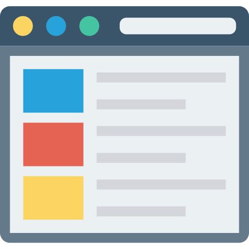

Jasa Website
Terima jasa optimasi loading speed Website, Pembuatan blog / Landing pages / Website, Penulisan artikel dan Riset kata kunci.
Dafid Palevi merupakan Forum Portal SEO ONLINE membahas perihal WordPress, SEO, Backlink, PBN.
Theme serta Plugin dan masih banyak lagi yang bisa di bahas pada situs Portal SEO Online yang digunakan untui berplatform CMS WordPress bagi Website Anda
Jasa Mempercepat Loading Website
"Jasa mempercepat loading Website adalah jasa yang diperuntukkan untuk optimasi speed website dengan tujuan aksesnya biar lebih cepat saat dibuka di mobile dan desktop sepersekian detik."

Jasa Pembuatan Blog
"Jasa pembuatan blog WordPress adalah jasa yang memudahkan Anda untuk memiliki sebuah blog Profesional dengan harga murah dan terbaik."
Jasa Riset Keyword
"Jasa riset keyword adalah layanan untuk membantu Anda dalam mencarikan kata kunci target untuk konten dengan kriteria persaingan mudah."
Jasa Pasang wifi
"Jasa pasang wifi cepat dan berkualitas."
Landing Page
"Jasa Landing Page adalah layanan pembuatan landing page untuk menawarkan satu produk dengan tujuan konversi penjualan.."
Jasa Artikel
"Jasa artikel murah sangat ramah kantong dengan penulisan sesuai kaidah SEO."
Ini Adalah Komitmen.
Kami menyukai perkerjaan pembuatan website. Kepuasan kami, adalah melahirkan karya-karya terbaik. Yang dapat bersaing secara global di internet!..
Interested In Our Services?
Website saat ini merupakan hal penting. Khususnya di era bisnis modren. Walau pun, anda seorang pe-bisnis lokal. Yang menjual secara offline. Dengan sistem market dari pembicaraan orang-orang. Calon pelanggan anda, cenderung melihat-lihat dulu di website. Melalui smartphone mereka. Walau pun hanya sekedar membaca informasi awal. Seperti memastikan apa yang mereka butuhkan, ada di anda!
Garuda Website, adalah sebuah badan usaha profesional. Bergerak di layanan jasa kreatif. Dibawah perusahan PT. Garuda Citizen. Kami melayani bergagai jasa pengembangan web. Untuk Berbagai Kebutuhan Bisnis. Seperti, Web Toko Online, Profil Usaha/Perusahaan, Majalah Online, Personal Blog Dan Lainnya.
Dalam melayani jasa pembuatan website, kami senantiasa memberi sentuhan lebih. Agar dapat bersaing secara global di internet. Seperti dalam hal tampilan visual. Dengan desain dan tata letak yang elegant. Responsive. Dimana dapat menyesuaikan dengan alat yang user gunakan.
Tidak hanya dari sisi konsep desain Jasa pembuatan website kami, lengkap dengan segala fitur yang dibutuhkan. Dengan kecanggihan tehnologi hosting IIX. Web hosting dengan data center tier 4. Jaminan uptime 99.9%.
Serta, landasan utama optimasi website. Untuk meningkatkan potensi traffik organik di mesin pencari. Diantaranya; Kecepatan loading cepat. Dilengkapi segala unsur SEO (Search Enggine Optimation). Domain yang telah HTTPS. Responsive mobile. AMP (Accelerated Mobile Pages). Dan masih banyak lagi.
Dapatkan potongan harga 10% Jika Anda order dari halaman ini!
Keingin tahuan Anda pada Garuda Website kami apresiasi dengan potongan harga khusus saat Anda order melalui halaman ini. Asikkan..
Hosting Terbaik
Layanan Hosting Terbaik Yang Ada di Indonesia
Hostinger
"Jasa mempercepat loading Website adalah jasa yang diperuntukkan untuk optimasi speed website dengan tujuan aksesnya biar lebih cepat saat dibuka di mobile dan desktop sepersekian detik."
Niagahoster
"Jasa pembuatan blog WordPress adalah jasa yang memudahkan Anda untuk memiliki sebuah blog Profesional dengan harga murah dan terbaik."
Rumahweb
"Jasa riset keyword adalah layanan untuk membantu Anda dalam mencarikan kata kunci target untuk konten dengan kriteria persaingan mudah."
GapuraHoster
"Layanan web hosting Indonesia dengan harga hosting murah, cara pembayaran yang mudah serta tim technical support berbahasa Indonesia yang berpengalaman yang siap membantu kendala teknis pada layanan hosting anda."
Warna Host
"Web Hosting Bisnis Indonesia murah dengan fitur SSD Disk & WordPress Accelerator, untuk kecepatan website anda serta platform hosting murah yang layak."
Cloudku
"Cloudku adalah penyedia hosting yang berfokus pada WordPress. Yang berorientasi pada pengguna WordPress di Indonesia. Cloudku menekankan kenyamanan dan kualitas."
Why Choose Us
Ada begitu banyak layanan jasa pembuatan website serupa. Tapi Garuda web development memberi sesuatu yang lebih. Dengan garansi hingga anda puas. Kita akan bekerjasama dalam merancang dan mengaplikasikan ide serta gagasan anda. Di dukung oleh pengalaman kami selama puluhan tahun dalam pengembangan sebuah website.
Kami, penyedia jasa profesional pembuatan website. Tumbuh dan berkembang dari kepercayaan publik. Hal utama dan kunci keberhasilan adalah kepuasaan client.
Misi Kami
Melahirkan Karya Berkualitas Yang Mampu Bersaing Secara Global Di Internet. Itu Misi Kami!.